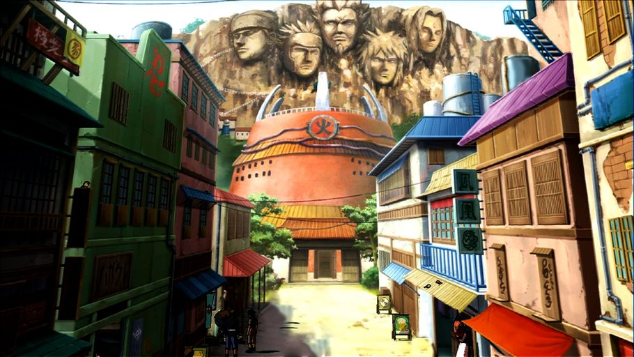
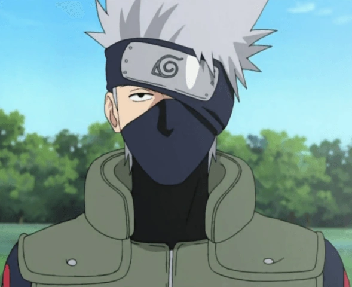
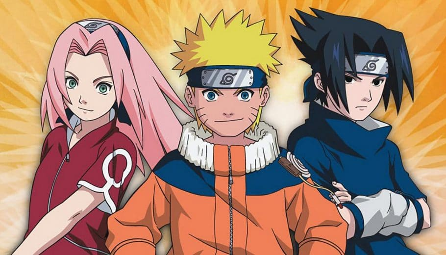
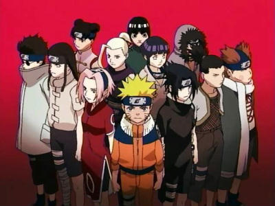

Os pais do Naruto Uzumaki
Minato Namikaze( lado direito na imagem) e Kushina Uzumaki( lado esquerdo na imagem).
.jpg)
Aldeia da Folha
A vila da folha é o local onde acontece boa parte da história de Naruto, já que é onde o protagonista cresceu e viveu, e o Masashi Kishimoto revelou em entrevista como foi a criação da vila e o que inspirou ele.

Kakashi Hatake
Kakashi Hatake é um ninja altamente habilidoso e o líder do Time 7, que inclui Naruto, Sasuke e Sakura. Ele é conhecido por seu Sharingan, que ele recebeu de seu amigo Obito Uchiha, e por sua personalidade descontraída e enigmática.
Impacto: Kakashi desempenha um papel crucial no desenvolvimento dos personagens principais, especialmente Naruto, ajudando-o a crescer como ninja e a enfrentar desafios. Ele também é um mentor importante para Sasuke e Sakura, guiando-os em suas jornadas pessoais.

Naruto tem como seus principais companheiros, Sasuke Uchiha e Sakura Haruno

Esses são os amigos de Naruto, durante a serie

Juntos, eles formam o Time 7, liderado pelo sensei Kakashi Hatake. Ao longo da série, Naruto, Sasuke e Sakura enfrentam diversos desafios e inimigos, fortalecendo seus laços de amizade e habilidades ninja.